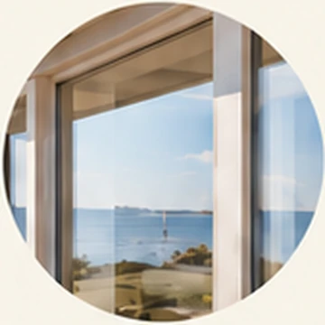
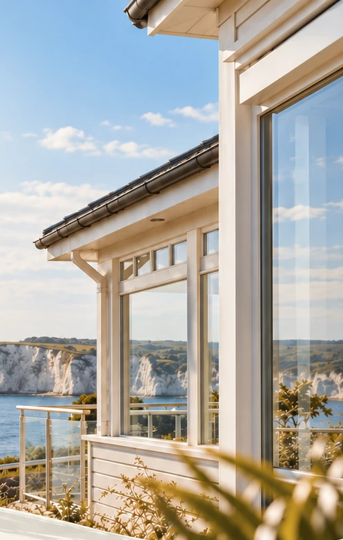
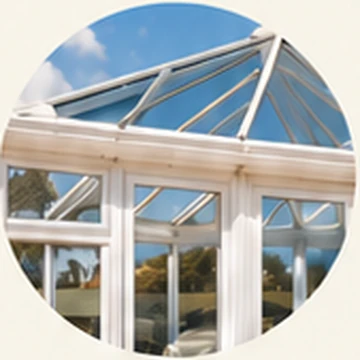
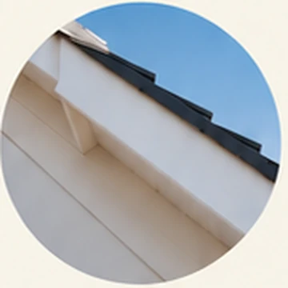
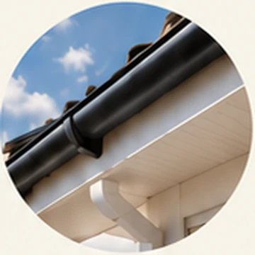
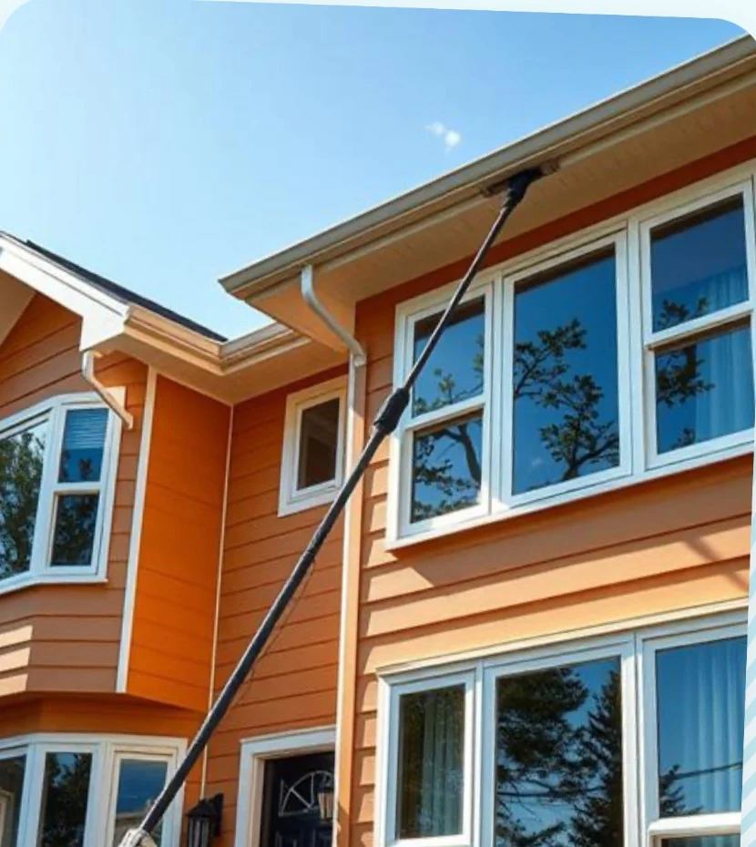
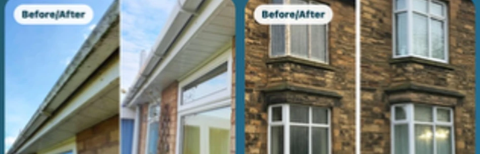

Window
cleaning
Clear glass, frames, sills and doors, carefully cleaned using our pure water system.
↗Thoughtful window and exterior cleaning for beautifully cared-for homes across Poole, Bournemouth and Dorset.

/ WHAT WE DO
All the details that make a home feel its best — beautifully looked after, from glass to gutters.

Clear glass, frames, sills and doors, carefully cleaned using our pure water system.
↗
/Light-filled spaces kept fresh, including conservatory glazing and exterior frames.
↗
Refresh your roofline and help exterior whites look bright and beautifully maintained.
↗
Remove built-up debris and help rainwater flow freely, away from your property.
↗Gentle, considered cleaning to remove surface dirt from your solar panels.
↗
/ THE BROOKS APPROACH
By the coast, the little things matter. Salt in the air. Changing seasons. The sunlight finding its way through freshly cleaned glass.
We bring a friendly, reliable approach to looking after homes and businesses, with pure water pole cleaning and attention to every detail.
TELL US ABOUT YOUR HOME/ THE FINER DETAILS
Sometimes the smallest things make the biggest difference. Take a look at the kind of exterior refreshes we offer.
BEFORE & AFTER / SELECTED EXAMPLES
WINDOWS & FRAMES ROOFLINE CARE
ROOFLINE CAREA LITTLE COASTAL INSPIRATION
From the first clean to every return visit, we believe good service should feel effortless.
LET'S TALK ABOUT YOUR HOME/ GOOD TO KNOW
And some simple answers, to make getting started feel easy.
SOMETHING ELSE? JUST ASKWe offer regular window cleaning visits as well as one-off cleans. Tell us a little about your property and we can suggest a suitable schedule.
Yes. Our pure water pole system allows us to clean exterior glass and frames from the ground where appropriate, leaving them to dry naturally.
Yes. We can help with gutter clearing and cleaning fascias, soffits and gables. Just select the service when you enquire.
We focus on Poole, Bournemouth and surrounding Dorset and South Coast areas. Send us your postcode and we'll confirm whether we can help.
Of course. Tell us what needs cleaning and where you're based. We'll be happy to discuss your requirements and provide a quote.
LET'S GET IN TOUCH
Tell us a little about your home and what you'd like cleaned. We'll take it from there.